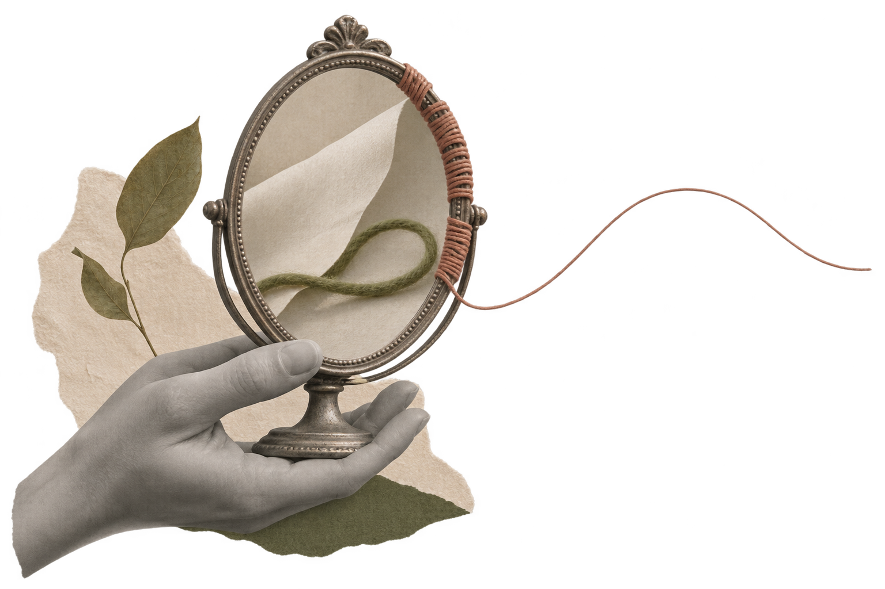
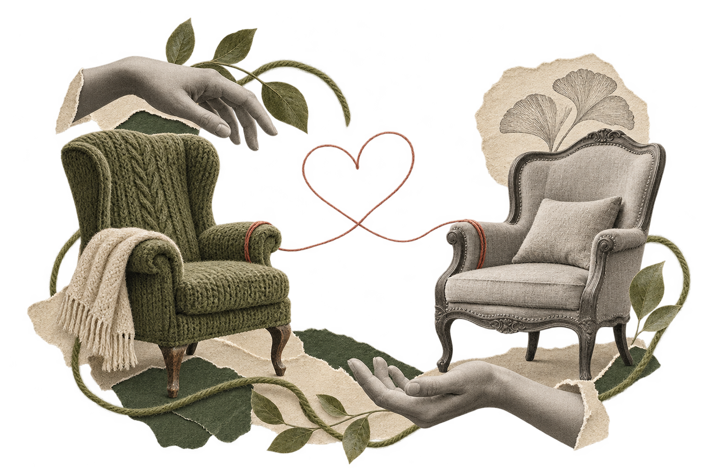

О себе, отношениях и терапии
Статьи
Понятные объяснения, примеры из обычной жизни и схемы, которые помогают лучше разобраться в своих переживаниях.
 Знакомство с терапией
Знакомство с терапиейПодготовка к первой встрече
Что происходит на первой консультации, о чём можно спросить и как подготовиться к онлайн-встрече.
Читать статью Понятно о КПТ
Понятно о КПТМысли, эмоции и поведение в КПТ
Как наши интерпретации, чувства и действия влияют друг на друга — на примере обычной ситуации.
Читать статью Тревога · КПТ
Тревога · КПТПочему тревожные мысли возвращаются
Почему хочется снова проверять и искать уверенность: схема тревожного цикла и вопросы для наблюдения за собой.
Читать статью
Самокритика · КПТПочему я постоянно собой недовольна
Как одна ошибка превращается в сомнение в себе и что можно попробовать заметить.
Читать статью
Отношения · ЭФТПочему мы снова ссоримся об одном и том же
Один из возможных циклов ссор и отдаления: пример, схема и вопросы для пары.
Читать статью